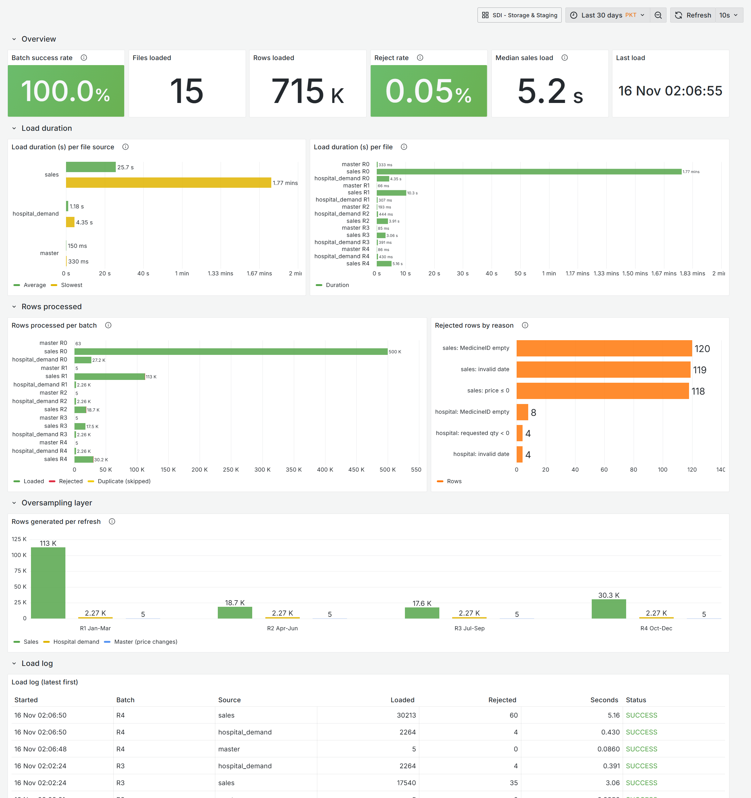
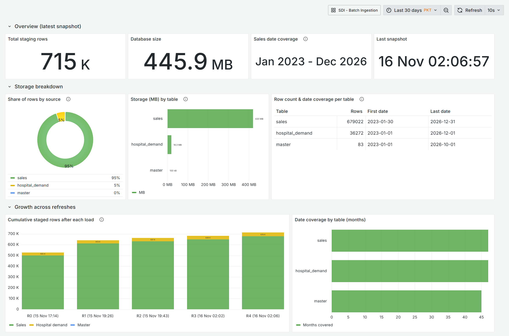

Intelligent Data Architectures, Fall 2026 · Phase 1: Sales & Demand Intelligence (SDI) Data Mart
Repository: github.com/aafiafarooq/IDA-PROJECT
The pipeline runs in Docker (docker compose up -d): Apache Airflow 2.10 (LocalExecutor), a Postgres 16 database
pharma_dwh for staging and monitoring, a FastAPI ingestion API and Grafana for the data engineering dashboards.
It is fully automatic: once started, no clicks are needed.
sdi_generate_data, every 30 min, writes next quarter's CSVsPOST /ingest/{source} checks type + columnssdi_ingest_pipeline, every 5 minCOPY → staging.*ops.* tables → Grafana| DAG / task | What it does |
|---|---|
sdi_generate_data(every 30 min) | First run sends the original 2023-2025 files through. Each later run generates the next 3-month period
(refresh 1-4 = Q1-Q4 2026). Skips if earlier files are not yet ingested and stops after refresh 4. Can be triggered by hand with refresh_no. |
watch_incoming_folder | Python sensor (file watcher). Reschedule mode with soft-fail: no new file = run is skipped, not failed. |
ingest_master →ingest_sales ∥ ingest_hospital_demand | Master (dimension) data first, then the two fact sources in parallel. Each file is validated row by row,
good rows are appended to staging, bad rows go to ops.rejected_rows, and the file moves to processed/ or failed/. |
record_storage_metrics | Row count, size (MB) and date coverage of each staging table → ops.storage_metrics. |
staging_ready | Hand-over point: the DuckDB transformation and query-layer tasks run after this task. |
Validation rules: MedicineID not empty (all files). Sales: valid SalesDate, price > 0, quantity > 0.
Hospital demand: valid DemandMonth, HospitalID present, quantities not negative. Master: valid EffectiveFromDate, prices > 0.
Every staging row carries batch_id, source_file and loaded_at for lineage. Retries: 1 (after 1 minute).
| Problem | Solution |
|---|---|
| The file watcher could pick up a file that was still being written (large sales files take seconds to write). | Generator and API write to *.csv.tmp and rename when complete (os.replace, atomic). The watcher only looks at *.csv. |
| Airflow retries or a re-uploaded file would insert the same rows twice. | Primary keys on every staging table. Load into a temp table, then INSERT … ON CONFLICT DO NOTHING. Re-loading is safe and duplicates are counted. |
| Inserting 500,000 sales rows one at a time is very slow. | Bulk load with the Postgres COPY command: 500k rows in 106 s, each refresh in 3-10 s. |
| The sensor marked runs as failed whenever the folder was empty, making the success rate look wrong. | soft_fail=True + reschedule mode: empty runs are skipped, and only real load errors count as failures. |
| The generator could run faster than ingestion and files would pile up. | The generator skips its run if data/incoming still holds files, and works out the next refresh number from ops.generation_log. |
| Random new rows would lose the strong January sales peak, and changing quantities broke the money columns. | Copy the same months one year earlier (keeps seasonality), then recalculate Gross, Discount, Net, Tax, COGS and Margin from the unit price. |
| The original sales file (218 MB) is over GitHub's 100 MB limit. | Original data excluded via .gitignore. The generated refresh files (all < 50 MB) are committed in data/oversampled/. |
pip install failed in the Airflow init container (it runs as root). |
Extra packages (duckdb) are installed only in the webserver/scheduler containers. |
| During the first 500k-row load, Airflow's DAG file processor timed out once. | It recovered on the next parse cycle. Later loads are small so it has not happened again. |
Both dashboards are built in Grafana (http://localhost:3000). They are provisioned from JSON files in the repository, read the
ops.* tables directly and refresh every 10 seconds, so a new load appears on screen within seconds of Airflow finishing.

| Metric (computation) | What it shows / the story |
|---|---|
| Batch success rate = successful ÷ attempted file loads × 100 | 100% over 15 file loads: every batch completed without an unhandled error. |
| Reject rate = rows rejected ÷ rows read × 100 | 0.05% (green below 1%). These are the deliberately broken test rows, so a small, stable rate is the expected healthy state. |
Load duration per source (horizontal bar) = ended_at − started_at | Sales is by far the slowest source: the 500k original took 106 s, but the median sales load is 5.2 s and refreshes load in 3-10 s, so the pipeline scales with new data, not total data. |
Rows processed per batch = len(df), split into loaded / rejected / duplicate | Shows the January peak: refresh 1 (Q1) has 112k sales rows vs 18-30k for later quarters. |
| Rejected rows by reason (malformed record count) | 373 rows rejected, exactly the number of rows the generator broke on purpose (0.2%). Validation caught all of them, and no valid row was rejected. |
| Rows generated per refresh | Output of the oversampling layer per quarter, for comparison with rows loaded. |

| Metric (computation) | What it shows / the story |
|---|---|
Table row count = SELECT COUNT(*) | 715k staged rows. Sales is 95% of rows (donut) and 96% of storage (bar), so it is where indexing and partitioning matter most. |
Storage footprint = pg_total_relation_size / pg_database_size | 446 MB database (table + indexes). |
Date coverage span = MAX(date) − MIN(date) | Jan 2023 to Dec 2026: the original 2023-2025 range is complete and each refresh extends it by one quarter. |
| Cumulative rows after each load | Staging only grows (R0 → R4): new data is appended, history is never replaced, as a DWH requires. |
Streaming ingestion: the Phase 1 sources are batch files. The streaming dashboard will be built with the IoT sensor data (07) in Phase 3.
The source data ends in December 2025. To simulate a live pipeline, the generator adds one new quarter of business activity per refresh (refresh 1-4 = Jan-Mar, Apr-Jun, Jul-Sep, Oct-Dec 2026). Old data is never replaced. Four refreshes exceed the required two, so the mart can be refreshed twice in each milestone.
EffectiveFromDate.SALE-R1-00000001, HDEM-R1-000001), so they never clash with existing keys.Why this much data: each refresh is one real quarter, so volumes follow the real monthly pattern rather than an arbitrary number. This makes the dashboard changes after each refresh visible and realistic.
| Source | Original 2023-25 | R1 Q1 2026 | R2 Q2 | R3 Q3 | R4 Q4 | In staging |
|---|---|---|---|---|---|---|
| Master (price versions) | 63 | 5 | 5 | 5 | 5 | 83 |
| Pharmacy sales | 500,000 | 112,794 | 18,737 | 17,575 | 30,273 | 679,022 |
| Hospital demand | 27,216 | 2,268 | 2,268 | 2,268 | 2,268 | 36,272 |
The generated files and a full data dictionary (123 columns: type, meaning, how each column was generated, validation rule) are in
ida-sdi-pipeline/data/oversampled/.
Assumptions: Phase 1 uses files 01, 05 and 06 only. One refresh every 30 minutes stands in for a quarter of real time. No new medicines, hospitals or pharmacies are created, only new transactions and price changes. Rejected rows are kept for review, not auto-corrected.